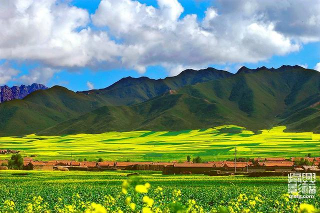
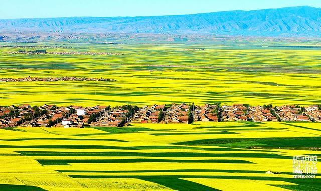
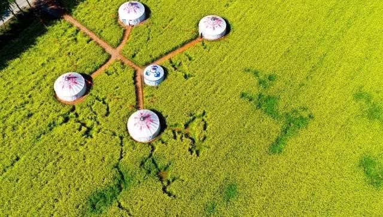

扁都峡
甘肃扁都口的十万亩油菜花正在盛放！！！
绝对媲美门源油菜花！



·位于祁连山中段，旅游区分为4个功能区，5个小区， 12个主要景点，配套设施完善。
·旅游区内最著名的旅游景观是扁都峡谷、黑风洞、石佛爷、诸葛碑及碧云天、黄花地的田园风光景。
·最好6、7月油菜花盛开的时候去，观景台、休息区一应俱全，全部免费使用，非常适合自驾游出行。
·这一带盛产油菜花蜜，有一股特殊的香气，凝结后呈乳白色，有猪油的质感，气味芬芳，路边有蜂农自产自销。
扁都口在祁连山的中段。不知何年何月，亦不知何方神人，“咔嚓”一斧子，把祁连山砍出了个大豁口，从此，两山对峙，一水中流，岸边小路蜿蜒，把青海古道与河西走廊连通在一起。古称“大斗拔谷”，这就是 “扁都口”！
七月的扁都口是最美的季节。一眼望去，油菜花把大地染成了金黄，一片片，一丛丛，一根根，一条条，苏世独立，秀雅端庄，潇洒大气。只是少了一些南国的，“丁香一样的，结着愁怨的”缠绵悱恻。尽头是草原，芳草如波，波上寒烟翠。当年霍去病出扁都口马踏匈奴，之所以敢于不带粮草，其原因或许就在于此。
扁都口是青海到河西走廊的重要通道，地势险要，怪石嶙峋，自古就是兵家必争之地。
胡胡咧咧地爬上了一个高处，远远望去，曾经的刀光剑影、黄尘古道已经不见了踪迹，留下来的是一望无际的黄花、草地、雪山……